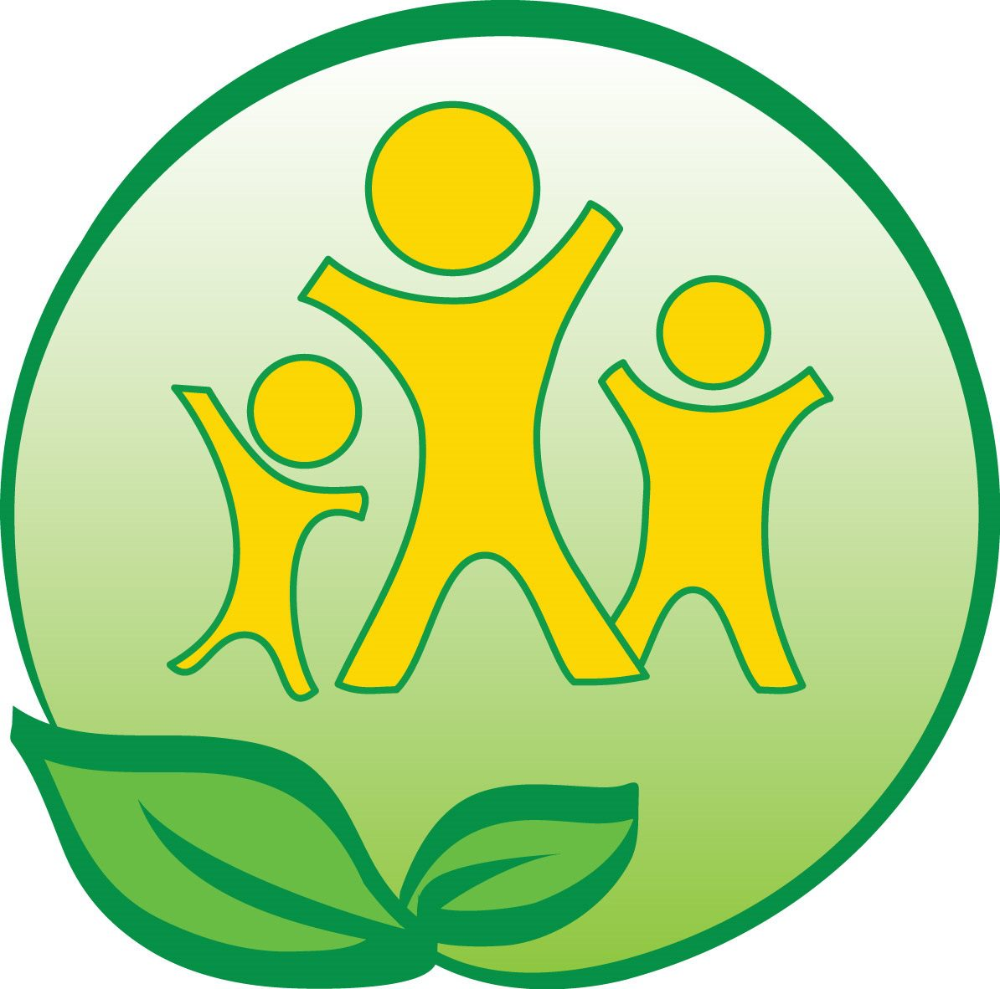
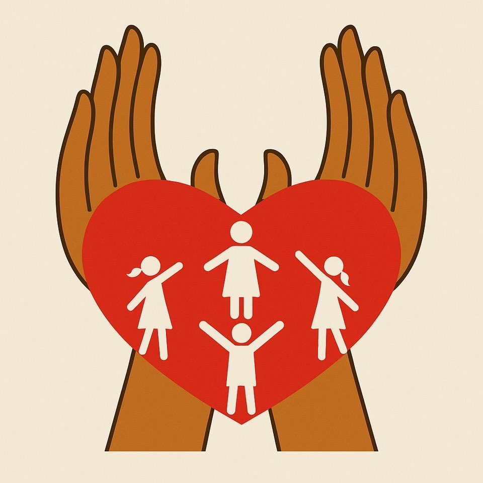
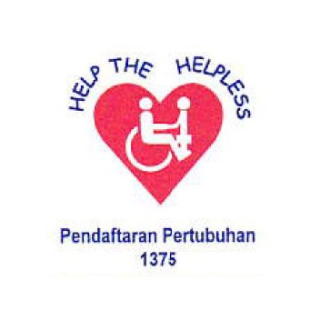

霹雳州
5
-
→
Nurul Iman 孤儿与贫困儿童之家
Pusat Jagaan Anak-Anak Yatim dan Miskin Nurul Iman · Rumah Nurul Iman · Ipoh
-

→新希望儿童院
New Hope Children's Home · Ipoh
-

→文冬良牧孤儿院
Pertubuhan Kebajikan Anak-anak Yatim Gembala Baik · Ipoh
-
 →
→Vision Home
Pertubuhan Kebajikan Vision Home Ipoh · Ipoh
-

→忠诚收留迟钝残障儿童中心
Pertubuhan Jagaan Kanak-Kanak Cacat Setia · Ipoh